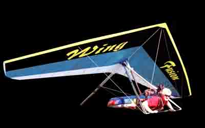

Paragliding video and photos, Hang Gliding Videos and Photos, Wiener Dog Videos and photos, New "THE BEST OF PARAGLIDING" video, New Book "HANG GLIDING SPECTACULAR" 2001, Hang Gliding Specialties, Hang Gliding Tandem rides, Hang Gliding instruction, Hang Gliding Links, Hang Gliding weather links, all from Bob Grant. (Skydog) Bob Grant has been a United States Hang Gliding instructor and observer. Bob Grant is a USHGA member and a Wills Wing Hang Glider pilot, Read The OZ Report by Davis Straub for Hang Gliding News Daily. Link to The OZ Report, THE BEST OF HANG GLIDING video, Wiener Dog Photos, Flying Fun, Our friend Francis Rogallo, Get it all from SKYDOG - Bob Grant.
Bob Grant Productions
ANIMATIONS


Bear Goes For a Loop